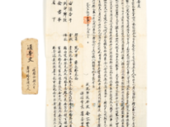
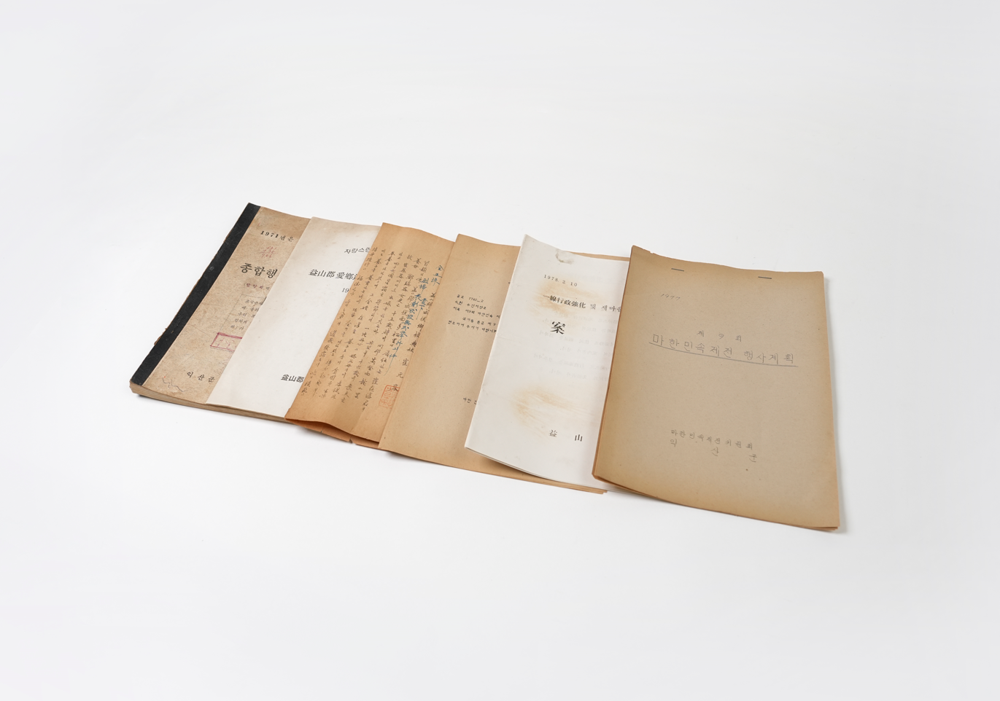
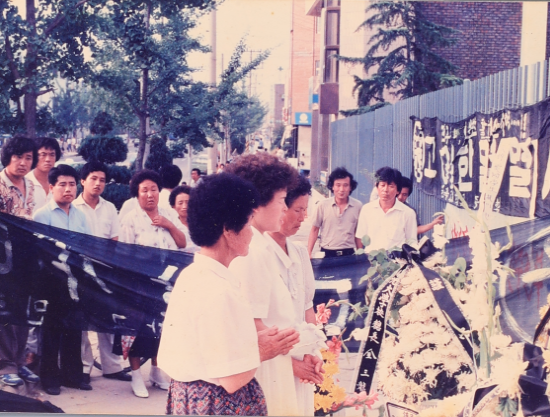

-
기증안내
잠자고 있는 소중한 기억을 기증받습니다.
-
이용안내
누리집 이용방법을 안내해드립니다.


'어디서나, 누구나' 익산에 대한 기록을 남길 수 있는 함께 만드는 지도






익산시 민간기록 특강 두번째 이야기
익산시 문화예술인 인터뷰록

고대부터 근대까지 보석으로 가득찬 익산
잠자고 있는 소중한 기억을 기증받습니다.
누리집 이용방법을 안내해드립니다.
가정의 달 5월을 맞이하여 익산시민역사기록관 방문주간을 운영하오니 시민 여러분들의 많은 방문을 부탁드립니다.
2025-04-24
이리·익산 통합(1995. 5. 10.) 30주년을 기념하며 이리시·익산군 자료를 수집 및 보존하기 위하여 「제5회 익산시 민간기록물 수집 공모전」을 개최하오니, 소중한 기록물이 후대에 전승될 수 있도록 많은 참여 바랍니다.
2025-04-23
